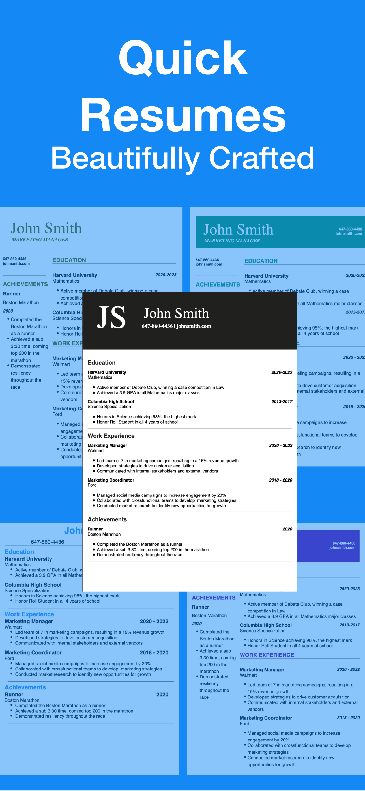
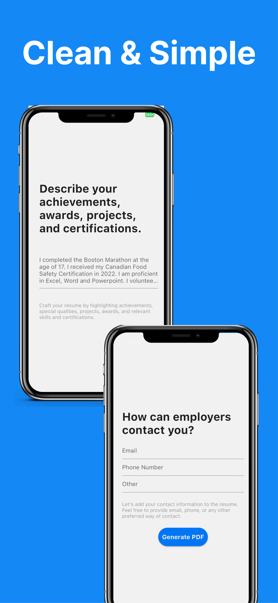
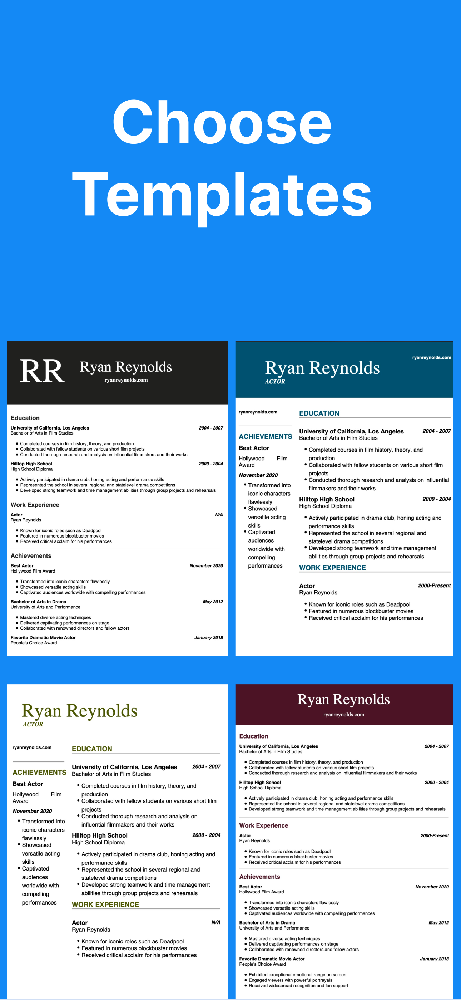
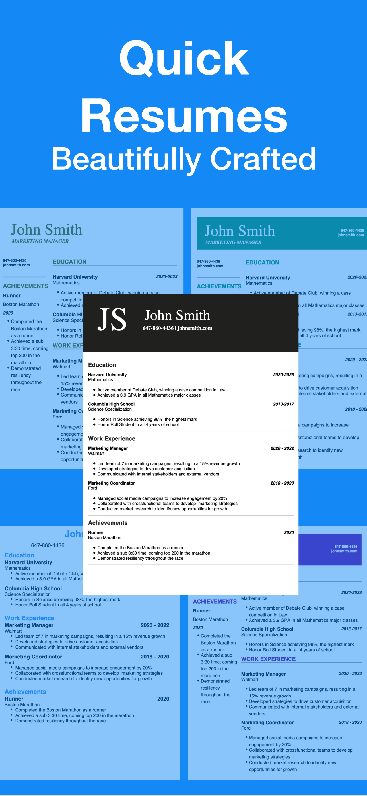
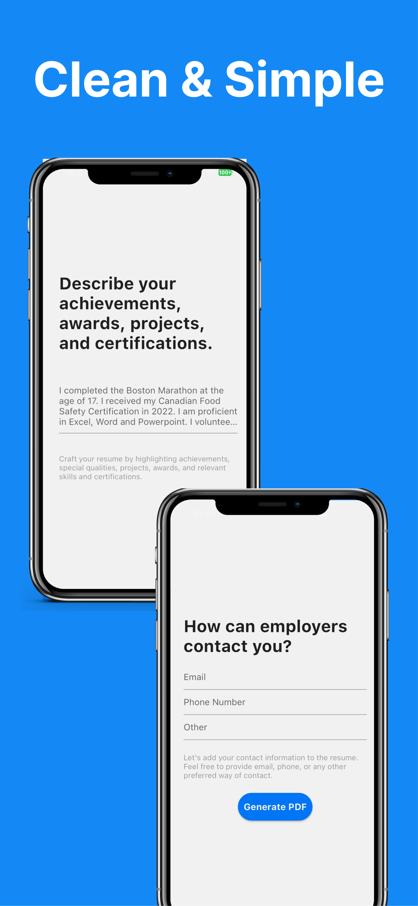
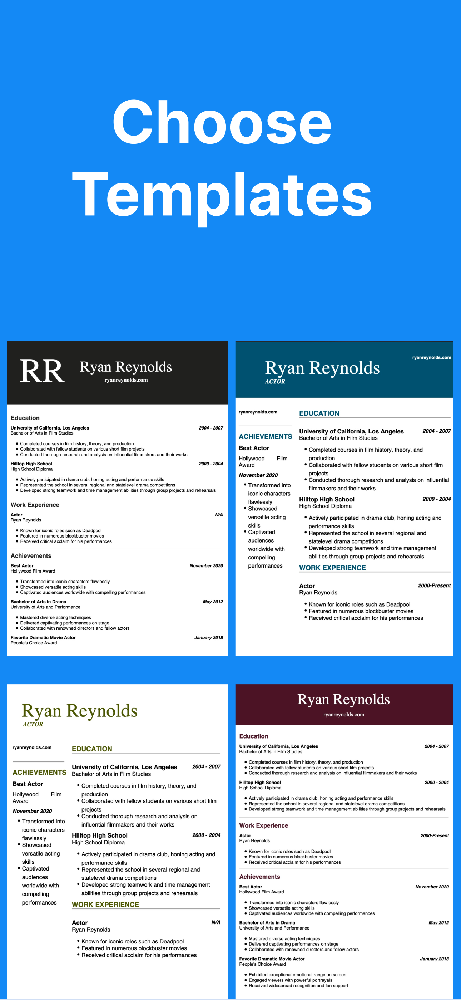

AI Resume Writer Description
AI Resume Writer - the ultimate tool for crafting impressive resumes effortlessly. Say goodbye to hours of formatting and editing – with AI Resume Writer, you can create a polished and professional resume in a few minutes. Just answer 5 straightforward questions about your education, experience, and achievements, and watch as the magic unfolds.
AI Resume Writer Features
üåü Quick and Beautiful: With over 15+ gorgeous recruiter-screened templates, ensure your resume stands out
ü§ñ GPT-3.5 Powered: Leverage the capabilities of the latest AI technology to create a memorable application
üìù Personalized Edit Feature: Easily edit your resume and browse other templates
üìÑ Professional PDFs: Receive your resume as a polished PDF, ready for printing or digital sharing
üîÑ Export Options: Seamlessly export your resume for easy sharing and collaboration
The AI Resume Writer Story
After I complete any project I’m proud of, I have a habit of chronicling the story of its creation and the journey it took to bring it there. The story for today is AI Resume Writer project. In the space of two weeks, my team and I created a deployed, monetizable app on both the App Store and the Play Store which I believe is truly the quickest and cleanest method to create a resume.
The true start to the story starts long before the project's actual start. At the start of Summer 2023, I knew I wanted to create something impactful with a team. My prior internship at Cognixion (neurotech start-up), taught me exactly how to work effectively within a software team so I had a good understanding of exactly what processes we needed to work in a larger team. Using branches, pull requests, JIRA, estimating story points, grooming sessions are all practices I grew fond of and was excited to implement in my own team. I also knew I wanted to build something genuinely impactful. The metrics I discussed with Ishan that would define our success was not just to create a cool technical project, but something that has users and generates revenue.
That would be our measure of success. With this mindset in mind, I approached Ishan and we got started on coming up with ideas. We discussed countless ideas, some ranged from outrageously ambitious and others were just boring. Eventually we discussed the success of the app created by our mutual friend’s previous manager. Reportedly, the app was generating 10k each month in profit and it was just a simple Resume Generator app. We then wondered how can we make it better? I brought up how easy the GPT API was to use. What if we fed user input to GPT and let GPT create a polished perfect resume? GPT was relatively new so not many apps were created to try something like this.
We then got started on discussing technical requirements, what would we get back from GPT? How would we actually generate the resume? Should we develop on XCode or Flutter? Then we got started on how the user should actually answer these questions? Should they be able to edit the resume afterwards? How would we make the user flow clean?
We liked the idea and thought it was interesting, but the idea was simply a side project once again. Sure, maybe this time we can get users and make some money but realistically how would we pitch this to a VC (we’re YC Combinator fanatics). So we said let’s come up with more ideas and come back in a week to discuss a better idea and finalize it. I ended up asking my co-op manager what he thought and whether we should pursue it despite the fact that maybe the idea can’t exactly launch a company. He brought up that the learning would be an amazing practice for the real thing. That advice switched my mindset completely. Why don’t I use this as a practice to see if I can make impact on the real world. Learning how to effectively work with others, how to lead a project, how to be responsible and take ownership of your product and be responsible for both its successes and failures. I ended up expressing this to Ishan and he fully agreed. We decided to get started.
The first thing we did was create a JIRA board and get started on planning how to get started. We decided that we should create the prototype and bring others on as the codebase becomes bigger. So on August 20th, we had our initial planning session and here was our timeline of when to get each feature in by:
PRODUCT PLAN:
MVP V0.1 (EOD August 21st):
Ask one question (in text box) → 1 query sent to chatGPT → get reply from GPT
MVP V0.5 (EOD August 23rd):
Ask one question (letting user input everything GPT needs to know) → 1 query sent to chatGPT → displays on a 1 single template (it's okay if ugly) → can export as 1 page pdf
MVP V1 (EOD August 25th):
10 questions to user → 1 query sent to chatGPT → displays on a 1 single template → can export as pdf/send to printer (and looks decently good)
MVP V1.5 (EOD August 27 launch):
10 questions to user → 1 query sent to chatGPT → displays on a 1 single template → can export as pdf (throttle control/self-sustaining)
MVP V2 (EOD September 2nd):
10 questions to user → 1 query sent to chatGPT → displays on multiple templates (in-app purchases) → can export as pdf OR docx
MVP V2.5 (plan for later):
10 questions to user OR putting in existing resume → 1 query sent to chatGPT → exports on multiple templates (in-app purchases) with color changing functionality → new page to edit app → can export as pdf OR docx
NOTE: EOD means end of day
We wanted to get this out before school and co-op started so we made these deadlines incredibly short. Each feature would have to be added in relatively quickly. I also got started on sharing the ideas with all my friends and inviting them to come on to the project. One other thing to note was that in hindsight, doing the product features on a timeline with many MVP iterations was an excellent decision because it kept us focused and on track. Despite the fact that at the end there were some pivots, we stuck to our original timeline and completed everything we needed and more by EOD September 3rd. Only a single day delay.
After each of these MVP deadlines, we discussed how the past “sprint’ (even though they were a couple days) went and groomed out all the tasks to do for the next sprint/MVP. I also loved these meetings and the entire process because it integrated seamlessly.
Despite these days being long, grueling and stressful, leading the project was incredibly rewarding and I learned quite a lot both technical and non-technical skills.
Non-technically, I learned how to think from a product perspective rather than simply a technical perspective. Considering the user flow, trying to limit pain points and even marketing was completely new to me. We represented our intended audience for the app using a character we named Blake, who has experience working at McDonald's for a couple of years and now wants a cashier job that his friend recommended for him at Walmart.
I asked a friend if she wanted to join in because she was interested in UX design and we figured she could help create wireframes and help us in understanding the flow. I also got two of my best friends to get started on marketing which was also an interesting problem. We decided that TikTok would be the best avenue both for helping us save money and because our target audience is likely also on the app.
Eventually we brought on 12 others, ranging from my little sister in Grade 8, career devs, data scientists, business students etc. I ended up managing the majority of them and would help them onboard and set everything up and asked them what they were hoping to get out of the project. Learning these soft skills to help and motivate others was incredibly valuable and I got an opportunity to lead and mentor others throughout the entire project which I thoroughly enjoyed.
In terms of technical work, I implemented the GPT API, did some prompt engineering and also ensured rate limiting worked. I also worked on creating the question flow page and UI in flutter and learned about page controllers and navigation contexts. I also used RevenueCat to implement in-app purchases which was a time-consuming challenge. Besides that, I reviewed every PR and had a hand in almost every single part of the app where I was involved in fixing bugs and giving implementation advice to others.
Conclusion and Next Steps
All in all, the two weeks was extremely stressful but also highly rewarding. I got an opportunity to lead a mini-startup, problem solve from a product perspective and be a technical mentor to others for the first time. The next steps are to market the app and see if we can generate revenue. As I’m writing this the app is on the Play Store and submitted for review on the App Store (we got rejected twice so far for silly mistakes). Once it’s out, phase 2 of marketing will begin and we can find out if AI Resume Writer ends up generating any money or users.
AI Resume Writer Terms of Service
Please review Apple's End-User License Agreement and Terms of Service for using the AI Resume Builder. Your use of the app is also governed by Apple's terms and policies. You can access Apple's EULA and ToS through the following links:
This policy is effective as of 2023-07-29